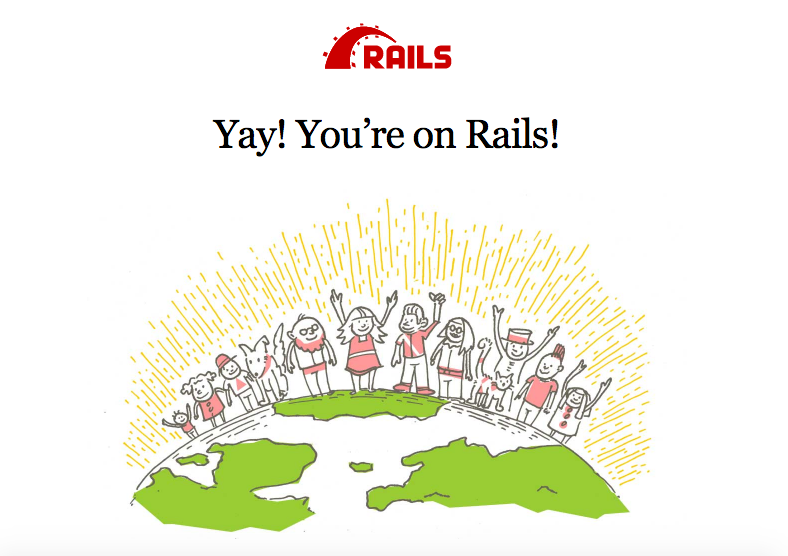
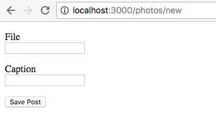
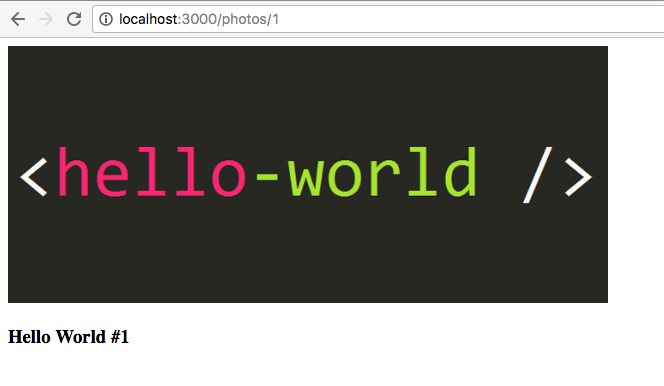
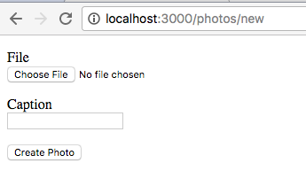
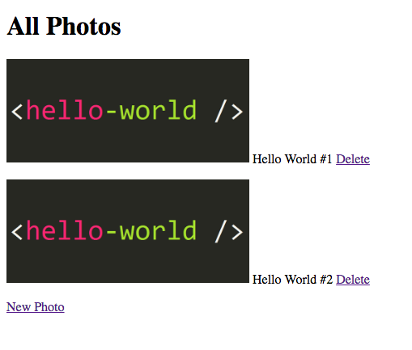
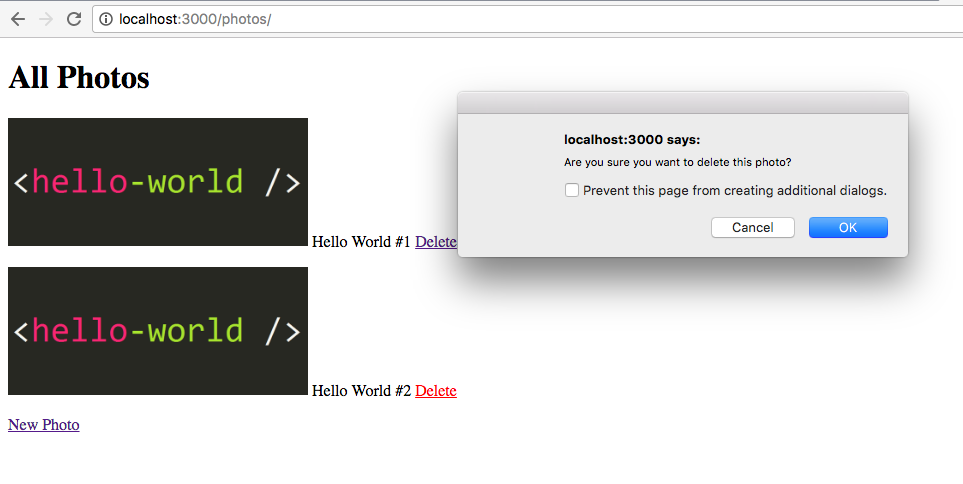

Instagram with Rails
We are going to build our very own Instagram clone.
This is what it will look like at the end of this tutorial:
Alright, let's build it.
1. Creating the Instagram application
Let's call our new project instaclone.
To create a new project in Rails, run this command in the terminal/console.
{% highlight sh %}$ rails new instaclone {% endhighlight %}This will create a new Rails application called instaclone in a instaclone folder and install the gem dependencies that are already mentioned in Gemfile using bundle install.
Now switch to your new folder.
{% highlight sh %}$ cd instaclone {% endhighlight %}The instaclone folder has a number of auto-generated files and folders that make up the structure of a Rails application. Most of the work in this tutorial will happen in the app sub-folder.
To see what other files Rails has generated for you, type this command in the console/terminal:
{% highlight sh %}$ ls {% endhighlight %}Now, we need to make sure we've got Rails working properly.
To do this, we need to run the server by typing this command:
{% highlight sh %}$ bin/rails server {% endhighlight %}To see your application in action, open a browser window and navigate to: http://localhost:3000/
You should now see this friendly Rails default page.
To stop the server, hit Ctrl + C in the terminal.
Mentor: Explain what each command does. What was generated? What does the server do?
2. Getting Up and Running
In your Instaclone application, you will now create a new resource. A resource is a term used to call a collection of similar objects so users will be able to access via URI and perform CRUD operations.
For example, we want to have a collection of photos in our application.
Go ahead and run this in the console/terminal:
{% highlight sh %}$ bin/rails generate resource photo file:string caption:string {% endhighlight %}This command will generate files we need for our photos collection, as well as two columns in our database.
But to get it to work properly we need to run a couple of other commands to update our database and restart the server.
{% highlight sh %}$ bin/rails db:migrate {% endhighlight %} {% highlight sh %}$ bin/rails server {% endhighlight %}Mentor: Explain the command, the model name and related database table, naming conventions, attributes and types, etc.) What are migrations and why do you need them?
3. Your First Form
Now that you have everything you need to build an Instagram clone, let's get coding.
Open app/controllers/photos_controller.rb, and you will see something like this:
To start with, we will need two actions in the controller. A new action and a create action.
Below the line:
{% highlight erb %} class PhotosController < ApplicationController {% endhighlight %}Add the code like so:
{% highlight erb %} def new @photo = Photo.new end def create @photo = Photo.new(photo_params) if @photo.save else render :new end end private def photo_params params.require(:photo).permit(:file, :caption) end {% endhighlight %}Now, go to app/views/photos/ and create a new form file called new.html.erb.
Add the following code:
{% highlight erb %} <%= form_for @photo do |f| %>
<%= f.label :file %>
<%= f.text_field :file %>
<%= f.label :caption %>
<%= f.text_field :caption %>
<%= f.submit %>
<% end %> {% endhighlight %}Save the file and see the form live in your browser after you refresh it.
Checkpoint:
Your page should now look something like this:
It looks a little basic, right?
That's okay, let's focus on building our main feature before we move on to styling the application.
Mentor: Explain what is CRUD and RESTful resource.
5. Displaying Photos
Before we can test our new photo form, let's add another action in our app/controllers/photos_controller.rb.
Below the create action, add a show action, like so:
Next, create a show file in app/views/photos and call it show.html.erb.
In your show.html.erb, add the following code:
<%= @photo.caption %> {% endhighlight %}
We also need to modify our create action a bit. Add a redirect when your photo is saved, like so:
Now, every time when we upload a new photo, if the photo is saved succefully, we will get redirected to the photo show page automatically.
Checkpoint:
Your photo page should look similar to this:
Mentor: Do something here...
4. Uploading Photos
So now you can actually create a new caption for a photo, but how to actually upload an image?
We need to install a piece of software to let us upload files in Rails.
Open Gemfile in the project directory using your text editor and under the line:
# gem 'capistrano-rails', group: :development
Add this line:
{% highlight html %} gem 'carrierwave' {% endhighlight %}Every time you add a new gem, you need to run a command to install it to your application.
So, in the console/terminal, run:
{% highlight sh %}$ bundle install {% endhighlight %}Mentor: Explain what libraries are and why they are useful. Describe what open source software is.
At this point you might need to restart the Rails server process in the terminal.
Note: Some people might be using a second terminal to run the rails server continuously. If so you need to restart the Rails server process now. This is needed for the app to load the added library.
Go to the terminal tab which runs the server and then hit CTRL + C to quit the server. Once it has stopped, you can press the up arrow to get to the last command entered, then hit enter to start the server again.
Now that we have installed the gem, we can generate the code for handling uploads.
In the terminal run:
{% highlight sh %}$ bin/rails generate uploader Photo {% endhighlight %}This command will generate a new file called photo_uploader.rb. You need this file to configure your upload settings.
Next, open app/models/photo.rb and under the line:
Add:
{% highlight erb %} mount_uploader :file, PhotoUploader {% endhighlight %}Then, open app/views/photos/new.html.erb and change:
{% highlight erb %} <%= f.text_field :file %> {% endhighlight %}To:
{% highlight erb %} <%= f.file_field :file %> {% endhighlight %}This will open your local window and let you select a photo to upload.
Sometimes, you might get an TypeError: can’t cast ActionDispatch::Http::UploadedFile to string.
If this happens, in file app/views/photos/new.html.erb change the line:
To:
{% highlight erb %} <%= form_for @photo, html: { multipart: true } do |f| %> {% endhighlight %}If you refresh your browser now, your form should now look something like this:
This time we can actually add a new photo. When you upload an image it doesn’t look nice because it only shows a path to the file, so let’s fix that.
Open app/views/photos/show.html.erb and change:
To:
{% highlight erb %} <%= image_tag(@photo.file_url, width: 600) if @photo.file.present? %> {% endhighlight %}Now refresh your browser to see what changed.
Mentor:
5. Displaying All Photos
Now that we can upload our photos, we need to find a way to show all of our photos.
To do this, we need to create an index action in our app/controllers/photos_controller.rb.
Below this line:
{% highlight erb %} class PhotosController < ApplicationController {% endhighlight %}And before the new action, add this code:
Next, create a new file called index.html.erb inside apps/views/photos and type this code:
All Photos
<% if @photos.any? %> <% @photos.each do |photo| %><%= image_tag(photo.file_url, width: 300) if photo.file.present? %> <%= photo.caption %>
<% end %> <% else %>No photos found.
<% end %><%= link_to "New Photo", new_photo_path %>
{% endhighlight %}Now, go to http://localhost:/3000/photos to see the changes.
Checkpoint:
Your index page should look something like this:
6. Deleting Photos
Just like Instagram, we would like to be able to delete our photos.
Deleting is super simple and can be fleshed out nice and quickly.
Let's first create a destroy method in the controller that deletes the specific record. We then need to provide a link to that action in our index view.
So, in our photos_controller.rb, just below the show action, add as follows:
And our simple link to that action with a warning on our index.html.erb view:
Save your file and refresh your browser, you should see a delete link available for the photos, similar to this:
When you click on the delete link, a confirmation dialog box will appear, like this:
And it’s done! Try deleting one of your photos now and see what happens.
8. Styling
Add bootstrap css framework
9. What's Next?
Toodles!